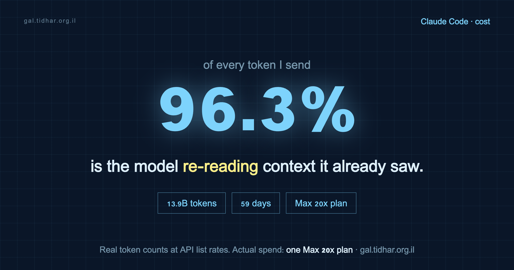

Claude Code · prompt caching · 59 days of logs
I cannot hit my Claude Code limit, and the logs explain why
Every week I see someone burn through their plan and buy a second one. I use Claude Code harder than most of them and it does not happen to me, which bothered me enough to open two months of my own logs. One number explains the whole thing: 96.3% of my tokens are cache reads. This is what that means, and the five decisions that follow from it.

Before the numbers: what I actually pay
The receipts
These are my real numbers, read out of local session logs with ccusage, over 59 days (2026-06-11 to 2026-08-08):
| Metric | Value |
|---|---|
| Total tokens | 13,932M (13.9 billion) |
| Cache reads | 13,418M — 96.3% of all tokens |
| Same tokens at API list price | ~$9,800 (hypothetical) |
| What I actually pay | €180/month, Max 20x |
| Busiest single day | 1,655M tokens (~$1,148 at list price) |
The ratio is the point. It is the one number here that does not depend on any pricing assumption.
Why the ratio is 96%
Claude does not remember your conversation. The API is stateless, so on every single turn Claude Code re-sends the entire conversation from the beginning. Your typing and the model's replies are a rounding error next to that.
Prompt caching is what makes it survivable, and it works as a prefix match. If the beginning of the request is byte-identical to the previous turn's, that span is served from cache at roughly a tenth of the input price. If anything upstream changed, the prefix is rewritten at up to 2x input price.
Any byte change anywhere in the prefix invalidates everything after it. Render order istools→system→messages, so a change near the front is the most expensive kind.
So in a long session, the overwhelming majority of your tokens are cache reads: the model re-reading context in order to work. That inverts the obvious instinct. Sending fewer messages barely helps. What helps is keeping the prefix stable, keeping the context small, and never paying a cache rebuild you did not have to.
What caching is actually worth
I ran the counterfactual on my own token counts: the same work, priced as if every cached token had been billed at full input rate. Both rows below are hypothetical; the gap between them is not.
| Scenario | Cost |
|---|---|
| At list price, without caching | $65,628 |
| At list price, with caching | $9,778 |
| Difference | $55,850 — 85% of the bill |
Caching absorbs 85% of the difference. On a subscription you never see that as money, which is exactly why it is invisible until you hit a limit and cannot work out why. Everything below is a way of not breaking it.
The five levers
1. Never switch models mid-session
Caches are model-scoped. Switching the main model mid-conversation invalidates the entire prefix and rebuilds it from scratch, at write prices. Pick at session start and stay. Routing work to a cheaper model inside a subagent is free of this problem, because the subagent has its own context.
2. Push research into subagents, on the cheapest model that can do it
A subagent begins with a clean, small context and discards it afterwards. Pages fetched from the web never enter your main context, so they never get re-read by it on every subsequent turn. Only the conclusion comes back. The saving is not mainly the per-token price of the cheaper model, it is the context that never grows.
My own split makes the point:
| Model | Tokens | List cost |
|---|---|---|
| Opus 4.8 | 9,751M | $8,332 |
| Opus 5 | 2,565M | $2,032 |
| Haiku 4.5 | 957M | $172 |
| Sonnet 5 | 529M | $217 |
Haiku did nearly a billion tokens of reading, searching and browser-driving at roughly a forty-eighth of Opus 4.8's cost per token. That work does not need a frontier model, and more importantly it stayed out of my main window.
3. Compact early
A window that has drifted to 85% full is re-read at 85% full on every subsequent turn for the rest of the session. Compacting early makes every later turn cheaper; it pays for itself within a few turns and keeps paying. I set CLAUDE_AUTOCOMPACT_PCT_OVERRIDE to compact well before the default.
4. Never wake a huge stale session with a one-line question
This is the expensive failure the whole setup exists to prevent. Leave a large session idle past the cache TTL, come back, type one line: that line pays to re-upload the entire conversation from scratch. On a session that has grown near a million tokens, a single sentence can cost several dollars. Start a new session instead.
5. Audit your skill shelf
Every installed skill's name and description sits in every session's system prompt and is re-read on every turn. Mine, measured:
| Component | Tokens |
|---|---|
| Skills (frontmatter only, 164 skills) | 16,513 |
| Core system | 12,900 |
| CLAUDE.md + memory index | 2,074 |
| Real measured session baseline | 51,013 |
51k tokens before I type a word, re-read every turn. A large shelf is a permanent per-turn tax. Install what you will actually use.
Two things that are not settings
Keep sessions alive instead of restarting them
I run cmux with seven workspaces open at once, each holding its own live context. I switch between them rather than closing and reopening sessions, so the context stays warm and the cache stays valid. The alternative — one terminal, serially reopened — pays a cold rebuild every time you come back to a thread.
Put the number on screen
You cannot fix a cost you cannot see. My status line shows context fill, session cost, and the 5-hour and 7-day plan windows, always. There is one non-obvious detail worth knowing if you want to build on it:
rate_limits is delivered to the status line and to no hook payload. If you want a hook that reacts to how much of your plan you have burned, the status line has to write that data down for it.So my status line tees its stdin to a file, and a Stop hook reads it and warns me once per session when the 5-hour window passes 80%. Getting cut off mid-refactor costs more than the tokens do.
Four things I had wrong
Writing this up meant checking my own settings against the current docs, and four of them did not survive:
| What I had | What is actually true |
|---|---|
BASH_MAX_OUTPUT_LENGTH: 50000, described as insurance against unbounded output | The default is 30,000, so I had raised the limit, not capped it. It also sets the read-back window rather than what reaches context: output over ~30,000 characters arrives as a file path plus preview either way. |
MAX_MCP_OUTPUT_TOKENS: 25000 | 25,000 is the default. The setting did nothing. |
| Auto-compact override as a simple "compact earlier" knob | It can only lower the threshold, and only applies when the session compacts before the model's context limit. |
| A note to go enable deferred MCP tool loading | MCP tool search is on by default now. Nothing to do. |
Three of the four were settings that felt productive and did nothing. That is the normal state of a config file nobody re-reads.
Measuring your own
npx ccusage@latest daily --breakdown # your real history, split by model
npx ccusage@latest blocks --live # the live 5-hour window
/usage # plan limits and reset windows
/cost # the current sessionccusage is third-party and reads only local session logs; nothing is uploaded. Its dollar figures are list-price reconstructions and will not match a subscription invoice — on a Max plan there is no per-token invoice to match.
The single number to look for is your cache-read share. If it is not in the 90s, something in your prefix is churning, and that is where your plan is going.
The config, as a repo
My settings, the status line, and the usage-guard hook are public and generic — no personal skills, no bespoke scripts. It ships a self-test and refuses to install if the test fails.